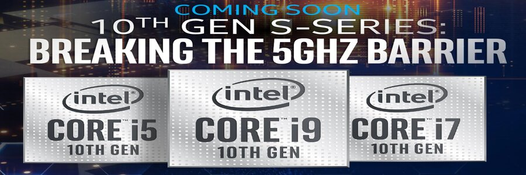

Blog by LP HARDWARE
Posted on june 3, 2020 at 7:49 AM

Intel apresentou oficialmente os seus novos processadores da 10ª geração, chamados de Ice Lake, em coletiva com a imprensa no final de julho.
O foco dos novos componentes são laptops 2-em-1, além de laptops ultrafinos. A nova linha é dividida em duas séries: a Y e a U. Vamos às diferenças. A Série U é destinada a dispositivos que contam com refrigeração ativa, ou seja, vêm equipados com cooler ou outro sistema que resfria o aparelho. Esta série vai ser destinada a computadores mais potentes. Assim, eles contam com a potência térmica (TDP, na sigla em inglês) na casa dos 15W, sendo que versões de desktop podem chegar a 28W.
Já a Série Y é voltada para aparelhos que não têm tal sistema de refrigeração. Em suma, a ideia aqui é termos menos potência com TDP de apenas 9W, bem mais abaixo que os 28W das versões mais potentes da nova linha. Mesmo assim, ainda é quase o dobro da geração passada, Amber Lake-Y, que tinha apenas 5W.
Com isso, a Intel lança 11 diferentes opções para diferentes aplicações. São seis chipsets na linha U e cinco na Y, entre i3, i5 e i7. O mais potente é o modelo Core i7-1068G7, com quatro núcleos e capacidade para até 64 EUs. Isso acontece porque alguns modelos da nova linha vão contar com uma nova GPU integrada, a Iris Plus.